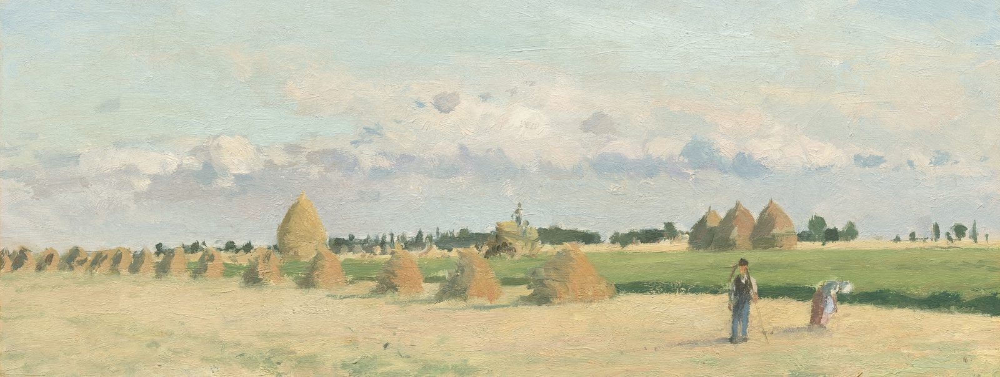

Kai Morales
Intern @ Tesla
I'm interested in AI eng, evals, and open source models.

Intern @ Tesla
I'm interested in AI eng, evals, and open source models.
Selected work in AI systems, data, and football.
You can click to play here.
applied ai intern
Energy analytics
co-founder
Pre-launch, $6K non-dilutive funding, 5 beta partners
applied ai intern
MLOps & AI agents
data science intern
Oncology symptom causal modeling
data science intern
Data science for D1 football
data science intern
LLM bias research & evals
research software engineer
FACET Lab
data analytics intern
Marketing
I’m Kai, an intern at Tesla. I’m interested in AI eng, evals, and open source models.
I grew up in Northern Virginia and spent six years in Tokyo, where I attended ASIJ and found my interests in motorsports, aviation, and photography.
I love playing soccer and was also the kicker for my high school’s football team.
You can reach me at
kaimorales75@gmail.com.
An AI assistant for personal trainers. Every client gets their own context model holding their wearable data and injury history, plus the notes logged after each session. Overnight, Harlen reads each model against that client's own baseline, ranks who has drifted and drafts their programming and check-ins, which wait until the trainer sends them.
I built the eval harness that decides which changes reach production. It replays coach questions with known answers against a frozen roster of fake athletes, where deterministic checks confirm every number in a reply traces back to the data and stays on the right client. Coaching quality is graded by pass/fail LLM judges, each aligned against about 100 human labels before it counts, so a model swap only goes out once it matches the old score.
context engineering · llm evals · wearables · ios
An n-of-1 analysis tool for months of wearable data. It runs changepoint detection to mark the dates someone's physiology shifted and tests which habits move which metrics using FDR-corrected correlations, then an LLM assistant explains the findings and cites peer-reviewed abstracts. Dan Nguyen, Lalit More and I built it for TartanHacks 2026, where it won Best AI for Decision Support.
python · changepoint detection · rag · wearables
Pools a room of MacBooks into one LLM cluster. Each Mac adds its memory to the pool and earns credits whenever it helps serve someone else's chat, which its owner can spend on their own. I built it with Dan Nguyen on a fork of exo and demoed Qwen2.5-32B on a three-Mac setup.
distributed inference · mlx · fastapi · react
A college football Top 25 built from results. Every FBS game is scored on the opponent's rank that week and a margin capped at 14 points. The total then adjusts for strength of schedule and trims 7% for each unranked win after the first. I published it weekly through midseason and posted a final table after the 2025 regular season.
python · pandas · cfbd api · ranking model
Tests whether World Cup referees gave Argentina more penalties than its shots would predict, using Poisson rate models on StatsBomb event data for every side in the tournament. In 2022 Argentina drew 5 penalties on 96 shots against 1.54 expected, the largest gap of anyone, although it stops being significant once you correct for testing 32 teams.
python · scipy · poisson models · hypothesis testing
A browser tool for high school coaches to draw plays. You pick a personnel group and drag players into place, then add routes from presets or by hand, lay Cover 1, 2 or 3 over the formation and export the play as an image.
javascript · canvas · football